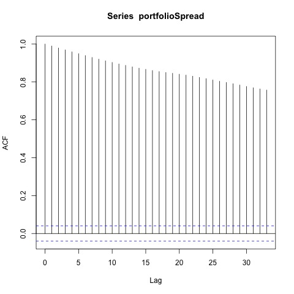
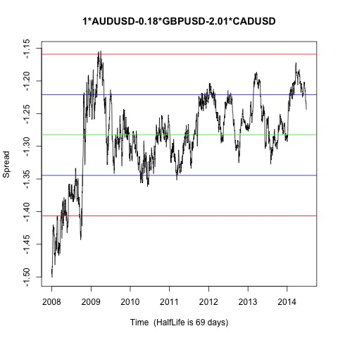

Johansen-Procedure "" "10pct" "5pct" "1pct" "r <= 2 |" 4.66 7.52 9.24 12.97 "r <= 1 |" 15.5 17.85 19.96 24.6 "r = 0 |" 34.52 32 34.91 41.07 "AUDUSD.l2" "GBPUSD.l2" "CADUSD.l2" "constant" "AUDUSD.l2" 1 1 1 1 "GBPUSD.l2" -0.18 0.97 0.16 -0.49 "CADUSD.l2" -2.01 -2.85 -0.78 -0.05 "constant" 1.27 0.26 -0.46 0.25
Augmented Dickey-Fuller Test p-value 0.0425361867969132 